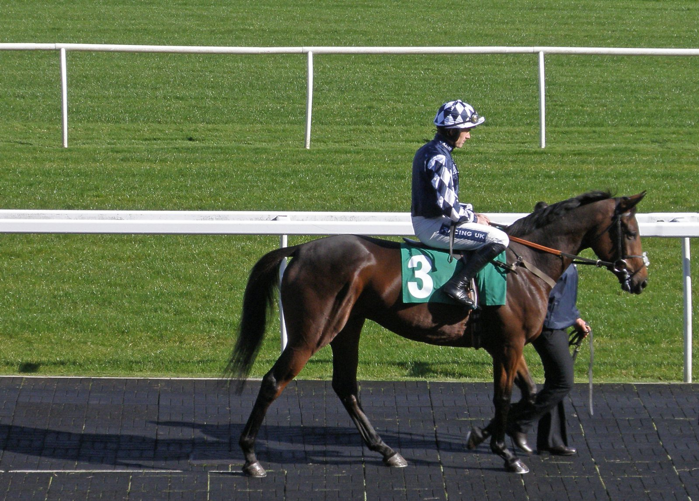

Hukum deja Japón y cubrirá en Overbury Stud a partir de 2027
Hukum, ganador del King George VI and Queen Elizabeth Stakes (Grupo I) de 2023, regresa a Gran Bretaña para ejercer como semental en Overbury Stud desde la temporada 2027.

El hijo de Sea The Stars ha sido adquirido por Jayne McGivern, de Dash Grange Stud, propietaria también de Golden Horn. Shadwell, su criador y propietario en las carreras, conserva una parte como copropietario. Hukum pasó sus tres primeras temporadas de monta en la base de Darley Japan en Hokkaido, y su primera generación ya son yearlings.
En la pista, con Owen Burrows como preparador, ganó 11 de sus 18 salidas a lo largo de cinco temporadas. En 2022 se adjudicó la Coronation Cup (Grupo I) de Epsom, donde sufrió una fractura en una pierna. Volvió al año siguiente para imponerse en el King George a siete ganadores de Grupo I, entre ellos Auguste Rodin y King Of Steel. Su palmarés incluye además el Dubai City of Gold (Grupo II) de Meydan y los Brigadier Gerard Stakes (Grupo III).
El pedigrí pesa tanto como las carreras. Hukum es hijo de Aghareed, por Kingmambo, desciende de la familia de Height Of Fashion, yegua fundacional de Shadwell, y es hermano entero de Baaeed. Este cuenta ya con Curracloe, ganador de Grupo III, entre los productos de su primera generación.
«Hukum fue un caballo de carreras soberbio, atlético, duro, con talento y decidido, con un cambio de ritmo explosivo», declaró McGivern. La propietaria cree que, como Golden Horn, atraerá yeguas tanto de liso como de obstáculos.
En esa misma línea se expresó Mark Dean, responsable de sementales de Shadwell. Confía en que Hukum tenga «todas las oportunidades para consolidarse como un semental de éxito» en ambas disciplinas.
Simon Sweeting, de Overbury Stud, puso el acento en la recuperación del caballo: «Es una gran prueba de su carácter y su temperamento que volviera de una fractura sufrida al ganar la Coronation Cup para ser todavía mejor y más rápido la temporada siguiente».
Por Martín Larrañeta